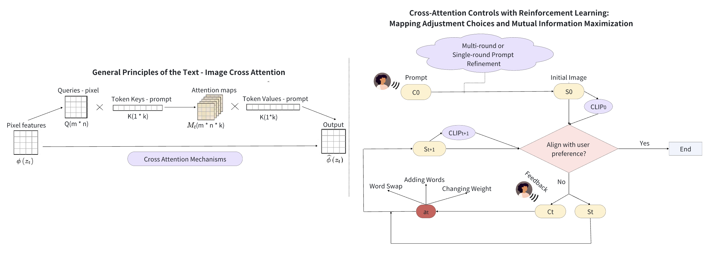
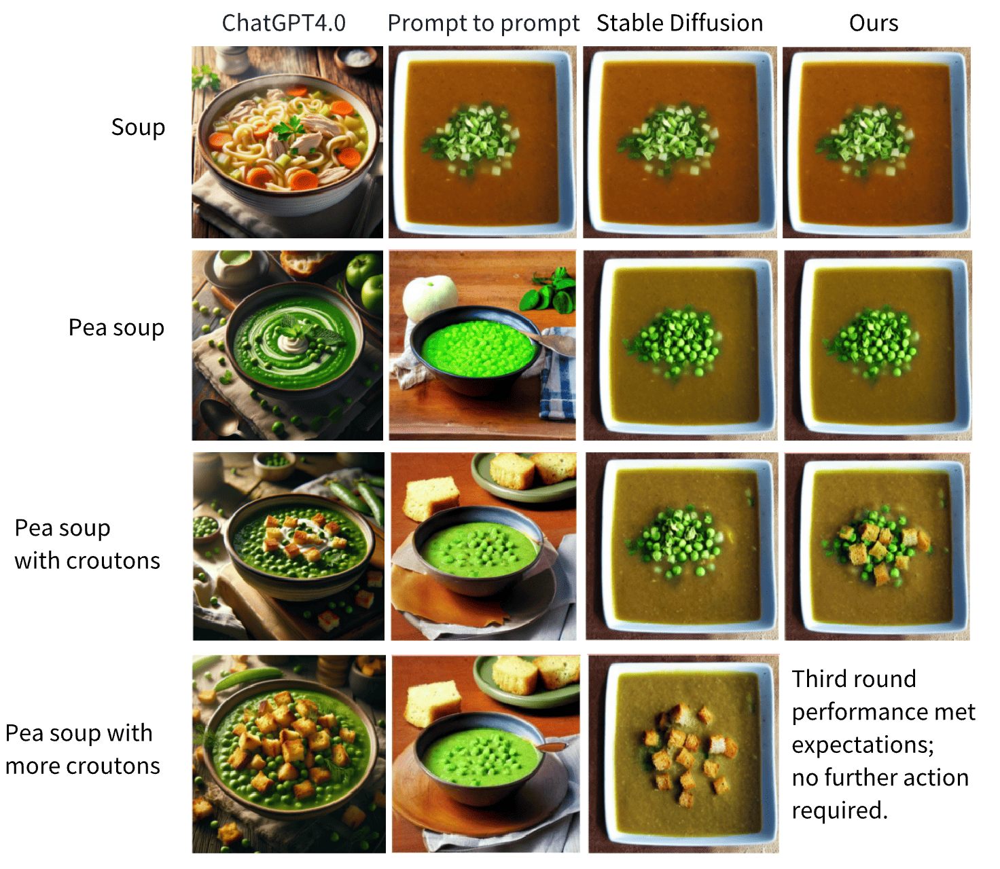

Abstract
Today's image generation systems are capable of producing realistic
and high-quality images. However, user prompts often contain
ambiguities, making it difficult for these systems to interpret users'
actual intentions. Consequently, many users must modify their prompts
several times to ensure the generated images meet their expectations.
While some methods focus on enhancing prompts to make the generated
images fit user needs, the model is still hard to understand users'
real needs, especially for non-expert users. In this research, we aim
to enhance the visual parameter-tuning process, making the model
user-friendly for individuals without specialized knowledge and it can
better understand user needs. We propose a human-machine co-adaption
strategy using mutual information between the user's prompts and the
pictures under modification as the optimizing target in order to make
the system better adapt to user needs. We find that an improved model
can reduce the necessity for multiple rounds of adjustments. Various
experiments demonstrate the effectiveness of the proposed method.

Figure 1. The diagram simply shows how the model uses
the CLIP scoring tool to check if an image matches what the user
wants. It treats CLIP scores as reward, improving the image through
rounds of feedback, like leveling up in a game, until it perfectly
matches the request. The basic framework of prompt-to-prompt ensures
the image consistently matches the user’s prompts, keeping the process
aligned with the initial request through all rounds more and more
closely.
Experiments
Results
| Model |
Human Evaluation ↑ |
CLIPscore ↑ |
LPIPS ↓ |
Average(CLIPscore/LPIPS) ↑ |
| ChatGPT-4 |
2.83(5) |
26.63/28.06/29.52/23.05 |
0.59/0.52/0.55 |
26.81/0.55 |
| Stable Diffusion Model 2.1 |
2.53(5) |
27.52/30.04/31.71/23.93 |
0.64/0.41/0.14 |
28.30/0.40 |
| Prompt to Prompt |
3.5(5) |
28.91/29.34/32.07/24.33 |
0.31/0.12/0.18 |
28.66/0.20 |
| Ours |
4.3(5) |
29.04/29.03/31.51 |
0.31/0.15 |
29.86/0.23 |
Table 1. In the Human Evaluation experiment, we
enlisted 30 human participants to score the generated images(the
perfect score is 5). In the columns for CLIPscore and LIPIPS, the
scores are listed from left to right, corresponding to each round of
dialogue from the first to the last round.

Figure 2. We carried out an examination to assess
the flexibility and responsiveness of image generation models by
incrementally refining the outputs based on user feedback.
Beginning with a broad request for ”soup,” we narrowed down our
specifications step by step, moving to ”pea soup” and subsequently
”enriching the prompt with ’croutons,’ followed by a request for
’more croutons’”. We evaluated the GPT, Stable Diffusion,
Prompt-to-Prompt, and our proposed model in this sequence,
arranged from left to right. Since our model had already generated
a sufficiently good image by the third round, it did not proceed
to the fourth round of generation. This methodology was designed
to evaluate the models’ capacity to adapt to progressively
detailed instructions.
Conclusion and Future Work
This study introduced a novel image generation method based on the
human-in-the-loop approach, significantly enhancing user interaction
and model responsiveness to user prompts. Our findings highlight the
model's effectiveness in generating images that closely align with
user expectations through adaptive prompt engineering and mutual
information optimization.
For future work, first, we plan to release the training data set for
our model; second, we also aim to refine the model's interpretative
capabilities, expand its applicability across diverse domains, and
conduct more benchmark experiments to evaluate the gap between user
intentions and generated images, pushing the boundaries of
personalized and intuitive image generation technologies.